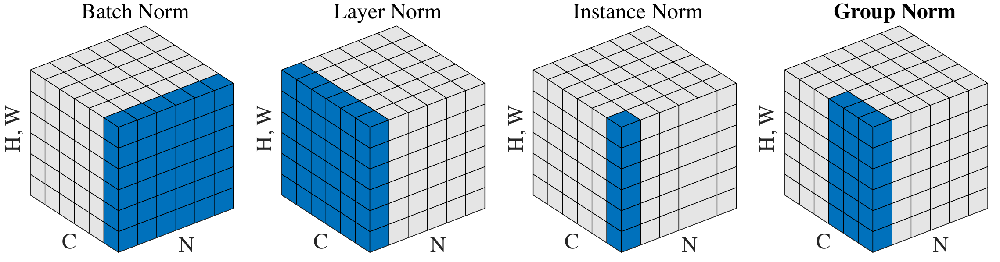

One recipe on different slices, and how BatchNorm changes at inference.
On this page
A normalization layer computes a center and a spread over a slice of the numbers flowing through a network, centers them on 0 and rescales them to spread 1 (RMSNorm skips the centering and scales their typical size, the root mean square, to 1, Section 2.4), then lets the network pick its own scale back. The methods differ only in which numbers form the slice.
Every norm layer runs on every forward pass; only BatchNorm also stores averages for inference (Section 3).
Each training step changes the weights, so the numbers the next layer receives drift in size from step to step. A layer that normalizes its inputs sees them on one scale at every step, which is often credited with easing vanishing and exploding gradients [2].
BatchNorm, the first of the layers on this page (Section 2.1), allowed much higher learning rates and less careful initialization, and reached the same accuracy in 14 times fewer training steps [1]. Its authors credited internal covariate shift, a layer's inputs changing as earlier weights change; Santurkar et al. found that link "tenuous" and measured a smoother loss surface instead, where the gradient says more about the loss a step away [2].
The running input X has two examples with three features each: two images with three channel values at one pixel, or two tokens.
| feature 1 | feature 2 | feature 3 | |
|---|---|---|---|
| example 1 | 1 | 2 | 3 |
| example 2 | 4 | 6 | 8 |
Find a group's center and spread, express each number as spreads from the center, then let the network rescale.
Term by term, μ and σ² describe the group, x̂ is each number's place in it, γ and β are the only learned part, and Section 2 changes only S. Figure 1 draws the four lines as ① to ④.
A conv layer's output is an N × C × H × W tensor: images, channels, pixel rows and columns.

BatchNorm came first, and in a CNN the batch gives many numbers per channel. Read X as two images: each column is one channel's value at one pixel.
Each feature is judged against the same feature in the other examples of this batch.
For a conv layer the slice is one channel over every image and pixel, so m is batch size × height × width [1]. Term by term, the subscript B says the statistics depend on which examples share the batch, which Section 3 deals with. LayerNorm flips the slice from columns to rows.
LayerNorm needs no batch, so it suits recurrent models [3] and, later, transformers. The Transformer Block shows the same layer from one token's side (section 2). Read X as two tokens with 3 features each; below them are row 1 made 10 times larger and row 1 with γ = (1, 0.5, 2), β = (0, 1, 0).
| token | input | LayerNorm output |
|---|---|---|
| row 1 | 1, 2, 3 | −1.22, 0, 1.22 |
| row 2 | 4, 6, 8 | −1.22, 0, 1.22 |
| row 1 × 10 | 10, 20, 30 | −1.22, 0, 1.22 |
| row 1, with that γ, β | 1, 2, 3 | −1.22, 1, 2.45 |
Each token is judged against itself, so a batch of 1 works and training and inference compute the same thing.
Term by term, the subscript moved from B to n, removing the batch, and D is fixed by the architecture, so the statistics never get noisier with batch size. In PyTorch:
import torch
from torch import nn
X = torch.tensor([[1., 2., 3.],
[4., 6., 8.]])
ln = nn.LayerNorm(3)
y = ln(X)
mu = X.mean(-1, keepdim=True)
dev = X - mu
var = (dev ** 2).mean(-1, keepdim=True)
y_hand = dev / torch.sqrt(var + ln.eps)var is the biased variance (divided by D, not D − 1) that the LayerNorm doc uses, and y_hand equals y since γ = 1, β = 0 at init.InstanceNorm removes each image's own contrast, which style transfer (repainting a photo in a painting's style) needs [4]. GroupNorm keeps the statistics inside one image, so it works at any batch size [5] (Section 3.1). Take tensor T: N = 2 images, C = 4 channels, 3 pixels each.
| ch 1 | ch 2 | ch 3 | ch 4 | |
|---|---|---|---|---|
| image 1 | 1, 2, 3 | 2, 4, 6 | 10, 11, 12 | 0, 5, 10 |
| image 2 | 3, 3, 6 | 1, 1, 1 | 8, 9, 13 | 2, 2, 5 |
Pick the slice, then run the recipe on it; all four layers are one formula.
Term by term, each condition shrinks the slice: more numbers per mean gives steadier statistics but mixes more things that may differ. Figure 2 draws the four sets. In PyTorch, 1 or C groups give the LN and IN slices:
import torch
from torch import nn
x = torch.randn(2, 4, 8, 8) # N, C, H, W
gn = nn.GroupNorm(2, 4)
y = gn(x)
like_in = nn.GroupNorm(4, 4)
like_ln = nn.GroupNorm(1, 4)GroupNorm(1, C) shares LayerNorm's statistics, but its γ and β are per channel, not per element [11].RMSNorm keeps only how large the numbers are and skips the centering, which saves compute [6]. RMS, the root mean square, measures size from 0.
Divide each number by the token's RMS instead of its spread, and never subtract the mean.
Term by term, LayerNorm's mean line is gone and the variance becomes a mean of squares around 0; at mean 0 the layers agree, so the paper hypothesizes the recentering can go. There is only a gain, no β. On a Transformer, RMSNorm took 231 s per 1,000 steps against LayerNorm's 248 s, 6.9% faster [6]. Press RMSNorm in Figure 5: the same slices as LN, but no cell goes negative because nothing is subtracted.
import torch
from torch import nn
class RMSNorm(nn.Module):
def __init__(self, dim, eps=1e-6):
super().__init__()
self.eps = eps
self.weight = nn.Parameter(torch.ones(dim))
def forward(self, x):
ms = (x * x).mean(-1, keepdim=True)
return x / torch.sqrt(ms + self.eps) * self.weight
x = torch.tensor([1., 2., 3.])
mine, builtin = RMSNorm(3)(x), nn.RMSNorm(3)(x)super().__init__() must run before a Parameter is assigned; weight is γ.ms plus eps is line 1; the return is line 2.nn.RMSNorm (PyTorch 2.4 or later) defaults to the machine epsilon [11].BN: 4 groups of 6 cells, one per channel across both images.
At inference there may be one image, so there is no batch to average. Like dropout, BatchNorm switches behavior in eval(): it uses averages saved during training. Take one BN channel as three batches pass, with means 2.4, 2.6 and 2.5.
Training keeps a slow average of what the batches looked like; inference uses that average.
eval() BN uses the stored μ and σ², so an output no longer depends on the rest of the batch; it is a fixed per-channel multiply and add.Term by term, momentum is how fast the average forgets; optimizer momentum only reuses the word. PyTorch's momentum 0.1 is what the optimizer pages call a decay of 0.9, an average over about the last 10 batches. Its last line is the BatchNorm card's last line with the stored μ and σ² in place of the batch's, which lets Normalization and Quantization fold it into a conv. Over many steps the running mean warms up slowly:
Only BatchNorm keeps state between steps [1, 3, 4, 5, 6, 11]:
| Method | Runs when | Remembers between steps |
|---|---|---|
| BatchNorm | every forward pass; batch statistics in train(), stored ones in eval() | a running mean and variance per channel, plus a step counter |
| LayerNorm | every forward pass, the same in both modes | nothing |
| InstanceNorm | the same, by default | nothing by default |
| GroupNorm | the same in both modes | nothing |
| RMSNorm | the same in both modes | nothing |
In PyTorch, train() moves the running statistics and eval() reads them:
import torch
from torch import nn
bn = nn.BatchNorm2d(4)
x = torch.randn(8, 4, 16, 16) # N, C, H, W
bn.train()
for step in range(3):
bn(x) # moves running_mean and running_var
bn.eval()
with torch.no_grad():
y = bn(x[:1]) # one imageeps 1e-5, momentum 0.1 [11].running_mean (line 1, Figure 7), and the step counter num_batches_tracked reaches 3.With 2 images per GPU the batch mean is mostly noise, so the network learns on noise; when each image gives one number per feature, a batch of 2 can only output −1 and +1 (Figure 3); in a conv layer the pixels add numbers, but the mean and spread still come from just 2 images. Wu and He trained ResNet-50 on ImageNet on 8 GPUs with per-GPU BN statistics [5]: BN's error climbed from 23.6% at 32 images per GPU to 34.7% at 2, while GroupNorm stayed between 24.0% and 24.2%. The GroupNorm figure in Classic CNN Architectures: AlexNet to ResNet plots every batch size.
batch 32: 9 in 10 BN outputs fall between about 0.67 and 1.39
GN's 1.07 sits off ① because 8 values give only a rough spread. SyncBatchNorm pools the statistics across all GPUs to get the big batch back, at the cost of one exchange per BN layer per step (code in Section 6) [5, 11].
The batch a model can afford picks its norm.
Two other layers carry the name but normalize weights, not activations: weight norm learns each weight vector's length apart from its direction [9], and spectral norm divides a weight matrix by the most it can stretch any input, which steadies GAN (generative adversarial network) training [10].
A transformer block's sublayers (attention and the feed-forward network) each sit inside a residual add, x plus the sublayer's output.
Xiong et al. showed that Post-LN Transformers need a learning-rate warmup, while Pre-LN trains without it in less time [8]; LLaMA uses Pre-LN with RMSNorm [7]. The Transformer Block compares the two (section 3).
| Symptom | Cause | Fix | What to log |
|---|---|---|---|
| Validation far worse than training, or results change with the eval batch | eval() not called, so BN uses batch statistics | eval() before validation and export | mode flag at each eval |
| Accuracy collapses with 1 to 4 images per GPU | noisy batch statistics [5] | GroupNorm, SyncBN or frozen BN | per-GPU batch size |
| Good offline, worse on new data | running statistics from another distribution [5] | recompute the running statistics on representative data | running_mean vs new batch means |
| Fine-tuning with tiny batches does worse than the pretrained model | BN statistics updated on tiny batches: about 6 AP (average precision, the detection score) worse than frozen BN at batch 2 [5] | keep BN in eval (Section 6, code note 3) or use GN | running_mean drift per epoch |
| NaN from a norm layer | a flat slice (Section 2.3) has variance 0, and a custom norm without ε divides 0 by 0 | keep an ε | smallest variance per layer |
| Knob (default) | What it does |
|---|---|
momentum (BN, 0.1) | weight of the newest batch in the running average; higher is faster and noisier, lower smoother and slower to warm up (Figure 7); None gives a cumulative average |
eps (BN, LN, GN 1e-5; RMSNorm None) | added before the root; too small risks dividing by a near-0 spread, too large flattens low-spread slices; RMSNorm's None uses torch.finfo(torch.float32).eps, about 1.19e-7, for 16-bit float (fp16, bf16) and fp32 inputs |
num_groups G (GroupNorm; paper default 32 [5]) | more groups, fewer channels per mean; must divide the channel count |
affine / elementwise_affine (True; InstanceNorm2d False) | turns γ and β on or off |
track_running_stats (BN True; InstanceNorm2d False) | False uses batch statistics in eval too; True makes InstanceNorm2d change in eval |
A conv block with BN, converted to SyncBN, and frozen for fine-tuning:
from torch import nn
model = nn.Sequential(
nn.Conv2d(3, 64, 3, bias=False),
nn.BatchNorm2d(64), # or GroupNorm(32, 64)
nn.ReLU(),
)
model = nn.SyncBatchNorm.convert_sync_batchnorm(model)
bn_types = (nn.BatchNorm2d, nn.SyncBatchNorm)
model.train()
for m in model.modules():
if isinstance(m, bn_types):
m.eval()eval() and keeps its stored statistics; converted layers are their own class: failure row 4.What happens to these layers when a model is quantized is on Normalization and Quantization.